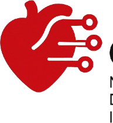
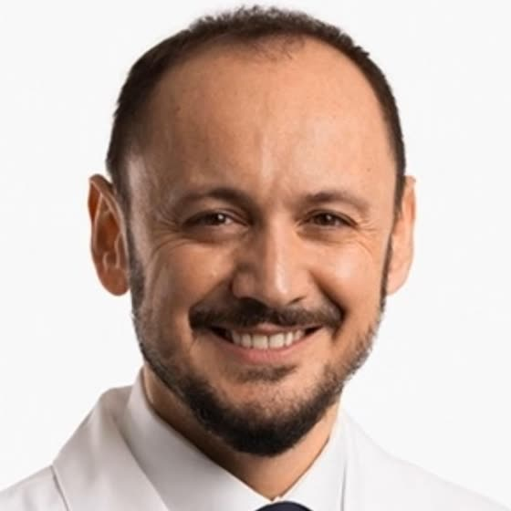
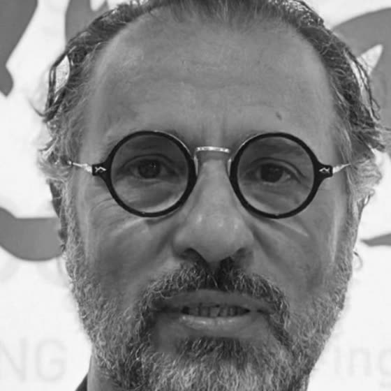
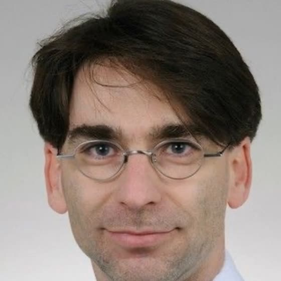
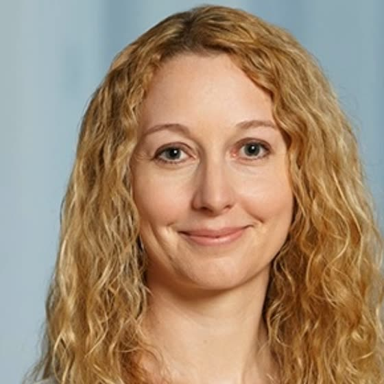
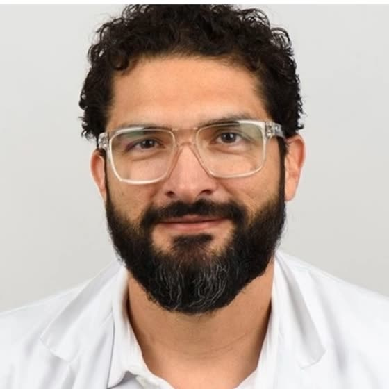
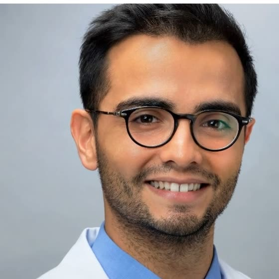
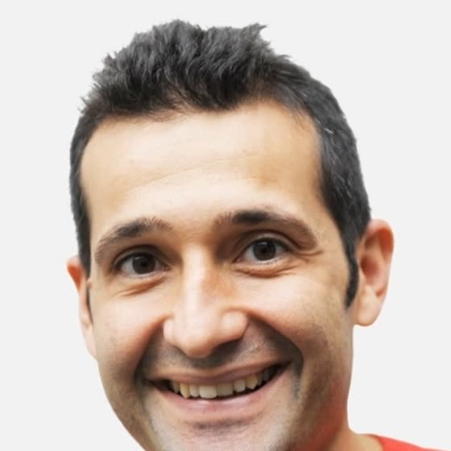
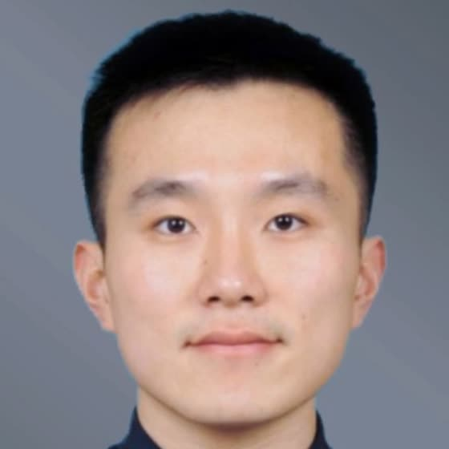

Next-generation diagnosis & intervention planning.下一代心血管诊断与介入规划。
CardioAI: Next-Generation Diagnosis and Intervention Planning is a focused workshop at Swiss AI Weeks bringing together leading minds in artificial intelligence, cardiac imaging and clinical cardiology to explore the transformative potential of AI in cardiovascular disease. From pre-procedural planning to real-time intervention support, AI is redefining how we visualize, analyze and treat complex cardiovascular conditions. CardioAI:下一代诊断与介入规划是 Swiss AI Weeks 期间的专题工作坊,汇聚人工智能、心脏影像与临床心脏病学领域的领军人物,共同探索 AI 在心血管疾病中的变革性潜力。从术前规划到术中实时支持,AI 正在重新定义我们观察、分析和治疗复杂心血管疾病的方式。
The workshop featured cutting-edge research, translational applications and industry–academic collaborations that aim to make AI-driven cardiac diagnosis and treatment more accurate, accessible and actionable — and drew over 140 researchers, clinicians, AI engineers and startups to ETH Zürich. 工作坊呈现了前沿研究、转化应用与产学合作,致力于让 AI 驱动的心脏诊疗更加精准、可及、可落地 —— 吸引了 140 余位研究者、临床医生、AI 工程师和创业者齐聚苏黎世联邦理工。








Interested in speaking, sponsoring or collaborating with the CardioAI community? Let's talk.想在 CardioAI 社区演讲、赞助或合作?欢迎联系。